Friendly: Red de Amigos
UI Kit & Sistema Modular
Arquitectura integral de componentes atómicos, estados interactivos y lenguaje visual empático diseñado para potenciar la conexión humana, la creación de eventos grupales y el bienestar social en entornos móviles y web.

Rediseñando la Interacción Social desde la Empatía
Las plataformas sociales tradicionales apuestan por patrones de adicción, sobrecarga visual y tipografías agresivas. Friendly nace como un espacio digital cálido para organizar planes tangibles, ensayos de música, clubes de lectura y reuniones reales sin fatiga cognitiva.
1. Calidez & Cercanía
Uso de tonos pastel periwinkle, lavanda y melocotón que inducen tranquilidad, eliminando la sensación de alerta constante que transmiten los feeds corporativos convencionales.
2. Claridad Atómica
Arquitectura escalable en cuatro niveles: Tokens de valor, Átomos interactivos, Moléculas funcionales y Organismos orquestados para una rápida composición sin fricciones.
3. Accesibilidad Empática
Áreas de pulsación mínimas de 44px, relaciones de contraste certificadas WCAG AA en texto regular y microcopys amables en situaciones de validación o error de formulario.
Paleta Cromática & Jerarquía Visual Armónica
Cada token representa un acuerdo emocional entre el usuario y la plataforma. Evitamos saturaciones extremas a favor de superficies luminosas y contrastes refinados.
Set de 35 Glifos Monolínea con Terminación Redondeada
Diseñados en una matriz base de 24x24 px con grosor uniforme de 1.75px. El set combina micro-señalética operativa (flechas, check, search) con metáforas comunitarias (calendario, avatar, corazón de favoritos, fuego de tendencias y avión de viajes compartidos).
Garantiza que la iconografía actúe como un elemento de guía sereno sin competir con las fotografías y contenidos compartidos por los usuarios.
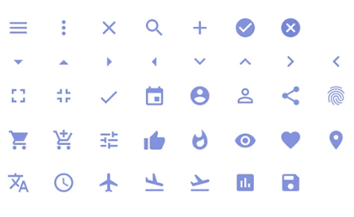
Matriz de Botones, Micro-Interacciones & Controles
Estudio riguroso de tamaños, densidades y comportamientos interactivos para responder a usuarios con diversas destrezas táctiles y periféricos.
Matriz Universal de Botones
4 Familias Semánticas × 3 Tamaños Táctiles (Grande, Mediano, Pequeño)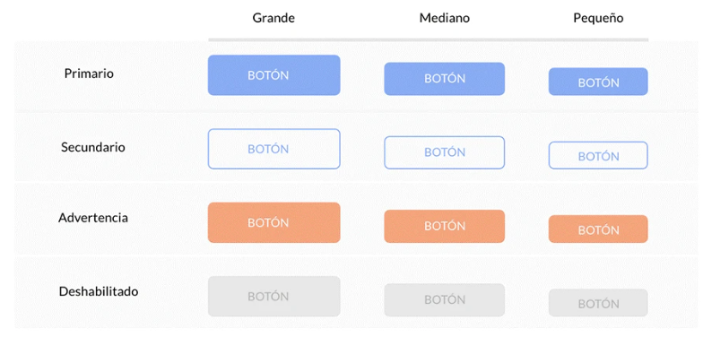
Botones de Acción Rápida
Feedback cromático instantáneo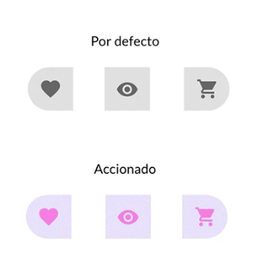
Las píldoras de acción asimétricas alojan micro-interacciones de Like / Favorito, Vista Previa y Añadir a Planes. Al accionarse, transicionan a lila con un glifo rosa de recompensa visual inmediata.
Checkboxes
3 Estados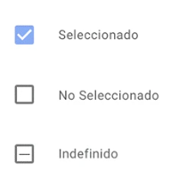
Validación de selección única o múltiple con soporte para estado parcial/indefinido en subgrupos.
Radio Buttons
Excluyentes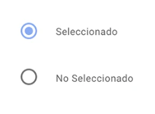
Geometría circular con punto interior azul pastel para selecciones mutuamente excluyentes.
Sliders de Rango
Continuo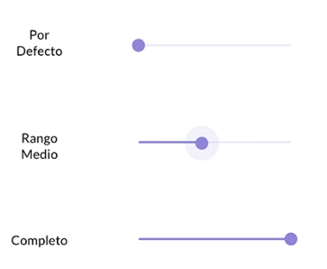
Handle circular con halo sutil para ajuste continuo de radio de búsqueda y volumen de notificaciones.
Progreso & Ayuda
Feedback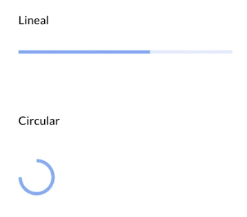
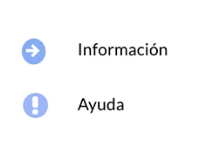
Spinners continuos, barras de subida de fotos y píldoras flotantes para resolver dudas en vivo.
Formularios Resilientes, Selectores y Etiquetas Dinámicas
La gestión de información personal y preferencias comunitarias debe ser fluida, segura y transparente en cada punto de interacción.
Estados de Text Inputs
4 Estados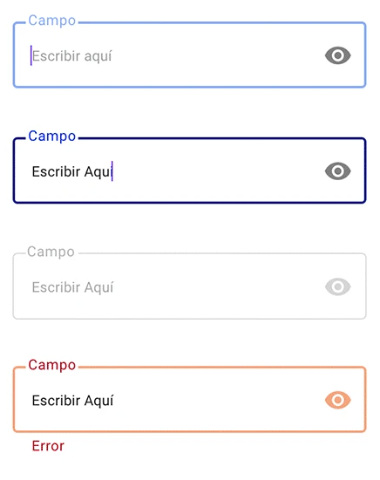
- Default & Active: Borde azul sutil que se acentúa en navegación por teclado.
- Estado de Error: Contorno coral/rojo con copy explicativo debajo y toggle de visibilidad seguro.
Dropdown Menu
Componente flotante con soporte para foco accesible, navegación con flechas y resaltado interactivo de opción activa.
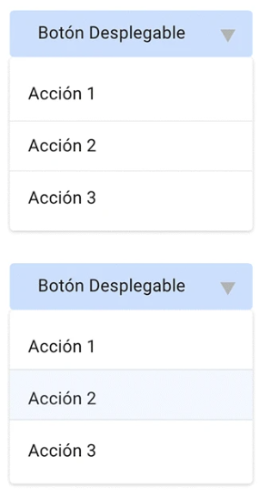
Sistema de Etiquetas & Gustos
Modal de selección de intereses (Música, Deportes, Jam Sessions). Cada chip lavanda incluye botón de descarte rápido (x) y estado reordenable.
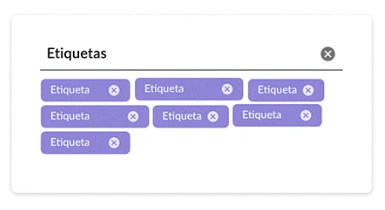
Planificador de Quedadas & Navegación de Listados
Los organismos combinan moléculas y átomos en experiencias de tarea única: agendar un plan grupal o navegar catálogos extensos de actividades sin perder el hilo.
Selector Integral Fecha & Hora
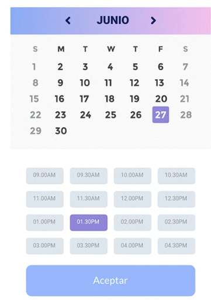
Reserva de horarios para salas de ensayo, convocatorias de partidos y sincronización de horarios disponibles entre círculos de amigos. El gradiente superior aporta ligereza estética mientras los slots horarios ofrecen feedback háptico.
Sistema de Paginación Escalable
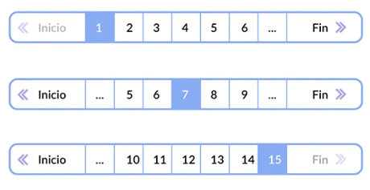
Card System: 4 Variantes para Feeds Dinámicos
Las tarjetas estructuran el contenido comunitario según la naturaleza del evento. Soportan imágenes protagónicas simples, collages de recuerdos grupales o variantes invertidas con llamadas a la acción directas para confirmar asistencia.
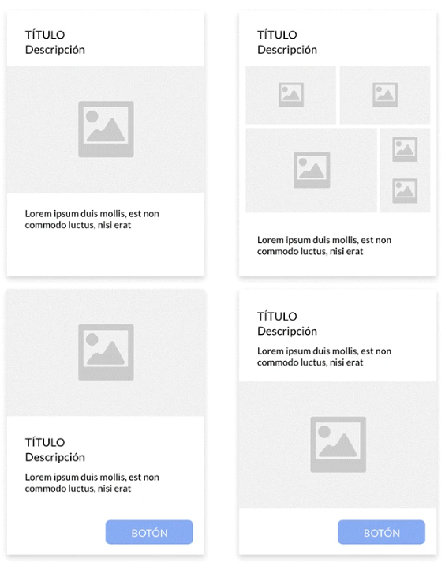
Aprendizajes Clave en el Diseño de Comunidades
Diseñar para la amistad digital implica reducir los estímulos artificiales y priorizar la autenticidad en cada estado del sistema.
Psicología del Color Sin Estrés
Reemplazar las alertas estridentes por acentos de melocotón y lavanda busca reducir la fatiga digital y mantener una interfaz serena en cada estado.
Tokens como Lenguaje Común
Nombrar las variables por intención semántica y no por valor hexadecimal ayuda a evitar errores de sincronización entre diseñadores en Figma y desarrolladores en React Native.
Escalabilidad por Diseño
La arquitectura desacoplada está pensada para absorber nuevas verticales (clubes de senderismo y talleres creativos) sin modificar el sistema base.
¿Deseas escalar el Design System de tu Producto?
Ayudo a empresas de tecnología y startups a estructurar bibliotecas de componentes de alta conversión, auditadas en accesibilidad y listas para producción.